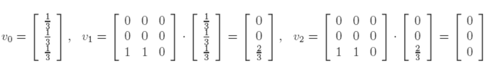

Each node is represented by a column; node 1=1st col, node 2=2nd col, etc.
Each col shows how much importance a node is transferring to other nodes (e.g. node 2 transfers 1/2 to node 3 and 1/2 to node 4 (look at 3rd/4th rows of col 2).
The sequence v, Av, ..., Akv tends to the equilibrium value v = (matrix in red). We call this the PageRank vector of our web graph.
Initial rank vector v shows each page starting out with 1/4 importance
Each incoming link increases the importance of a web page, so at step 1, we update the rank of each page by adding to the current value the importance of the incoming links. This is the same as multiplying the matrix A with v . The new importance vector is v1 = Av. Iterating the process, the next updated importance vector is v2 = A(Av) = A2v.
The Page Rank vector v (red) we have computed indicates that page 1 is the most relevant page. This might seem surprising since page 1 has 2 backlinks, while page 3 has 3 backlinks.
However, if we take a look at the graph, we see that node 3 has only one outgoing edge to node 1, so it transfers all its importance to node 1. Once a web surfer visits page 3, he/she can only go to page 1.
Node 3 is a dangling node with no outgoing links.
If we iteratively compute the ranks, we get:
It now seems as if all the pages have rank 0. To address this issue, we can just replace the column corresponding to the dangling node 3 with a column vector with all entries 1/3. In this way, the importance of node 3 would be equally redistributed among the other nodes of the graph, instead of being lost.